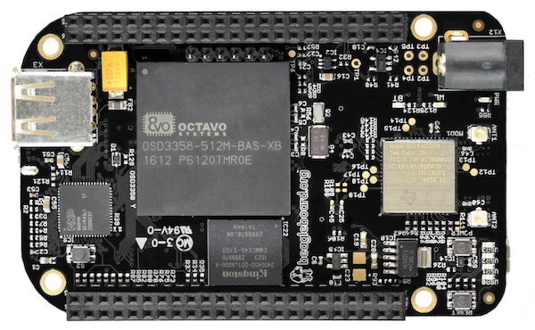
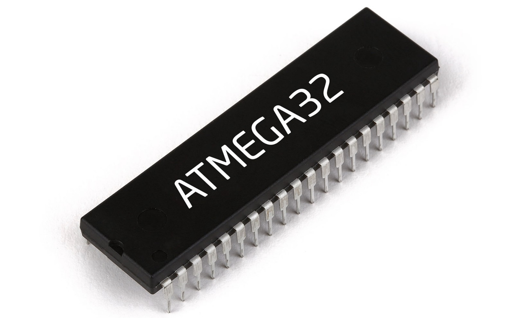

Intro
A little bit about my beliefs and aspirations...
I believe there are two types of people. People who choose a career that comes easy to them, and people who find something challenging that they love and work hard to achieve in that field. I am the latter of the two, because I know I struggled so much to be where I am.
I remember attending my first ever programming class thinking, "Do I even belong here?" Weeks go by with many late-night projects, only to do poorly on most. At this point, many people would be discouraged and possibly quit, but I know I did not get accepted into this major just to forfeit. I loved the feeling of fixing those segmentation faults which kept you up for hours. That feeling, which I know many can relate to, is what kept me going. I stayed resilient and recently graduated from the University of California, Irvine with a B.S. in Computer Science. I specialized in Systems and Software which dives deeply into Operating Systems.
After completing my internship and a relatively long job search (9 months), I landed a position at Rivian Automotive as an Embedded Software Engineer. I currently work on the inverter project writing software that is related to safety. What happens when a vehicle crashes? What happens if the microcontroller stops beavhing as it should? What if the processor just resets randomly? With a team of experts, we help answer and execute these challenging questions.
I am relatively early in my career, but with that, comes with motiviation and passion to continue learning new technologies. Currently, I am working on breaking into the Embedded Linux terrority by working on personal projects and expanding my knowledge on fundamentals such as the Kernel and Bootloader.
Work
Rivian Automotive
Embedded Software Engineer II
- Implemented supervisor task utilizing an external watchdog communicating over SPI that overlooks multiple
tasks in a tricore ARM based system to verify execution sequence and timing.
- Lead and executed safety critical features such as vehicle crash signaling, reaction to system reset due
to an unresponsive task, and other sensitive features to keep the driver and passengers safe at
any given time.
- Identified and addressed issue where a delay function became an infinite loop with extremely specific
values causing run-time resets to occur at an extreme rare percentage.
- Utilized debugger and oscilloscope to modify system reactions before an unexpected reset to ensure vehicle
remains in a safe state.
Embedded Software Engineer I
- Worked closely with Electrical Engineering team to bring capabilities such as voltage to temperature
conversion, hardware diagnostics through software, and populating test points for debugging.
- Provided API’s that interacted with GPIO’s and other device peripherals to various members of the team
to interact and communicate with different parts of the system.
- Revised CAN database as well as source code to modify behavior of message transmission rate and payload
to track data to improve feature stability.
- Performed and added unit testing for various embedded functions using Google Test and Fake Function Framework.
Prism Software
Quality Assurance Engineer
- Wrote automated test cases using Python for unit testing (PyTest) using the company’s API which helped
decrease regression testing time by more than 50%
- Helped create a framework that can run a test suite anytime a new a build is pushed using a Windows Server
machine and event scheduler
- Involved in redesign of a web application to improve user experience
- Automated incoming bug tickets to be sorted by priority and created a verification system in which to decide
whether the bug is reproducible or not
- Perform inspections and conduct testing to locate defects in the software and report results to the respective Engineering teams
Resume
Projects

Embedded Linux (Beaglebone Black)
In the attempt to break into the Embedded Linux industry, I have been working with various aspects of Linux to learn the fundamentals. I manually configured a linux image using buildroot to learn and understand Bootloader, Kernel, and file system configurations. I also created a TFTP server on a host Ubuntu machine to transfer files between the host and beaglebone. In the process the beaglbone booting up, it fetches the Linux image files from U-boot to boot into Linux. The linux image (zImage and .dtb are written into memory. I also wrote a extremely simple Linux kernel module and modified the build configuration files such as KConfig and Makefile to compile the module directly into the source.

Basic platform game (ATmega32)
Using an Atmega MicroController, LCD, and Keypad, my partner and I created a small game that is similar to the T-Rex game on Chrome. The map is generated randomly and the speed accelerates as the game progresses. The code is constantly checking for input to make sure there is no latency. This was by far one of the most interesting and exciting projects I have worked on.
Automation Framework
This project was done at my previous employer, Prism Software. I was involved in creating a framework for running unit tests. A bash script was created to pull the latest changes and execute the test suite every hour. The test executer checks to see if a new build has been released. If a new build was released, all of the unit tests would run. Once the code has executed, it uploads all of the results to Jira and emails the test results to the team.